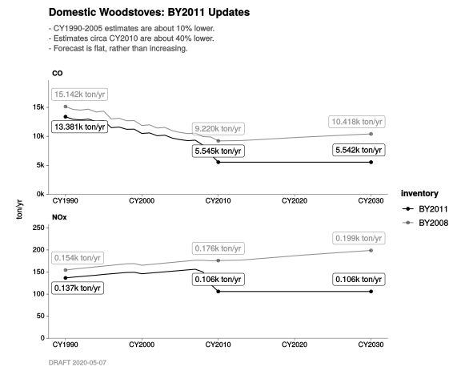
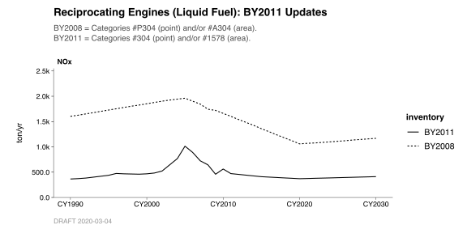
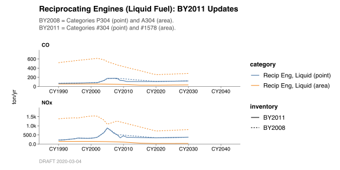

Chapter 9 Comparing Inventories
This chapter is about comparing one inventory to another. You might wish, for example, to see the differences between the BY2011 and BY2008 versions of one of the categories that we charted in previous chapters.
Let’s use #288 Domestic Woodstoves as a simple example of how to do this with a single category.
9.1 Combining data
First, we need to gain access to the BY2008 data, via library(BY2008). This is just like we did in Chapter 2, with library(BY2011).
Now we combine BY2011_annual_emission_data and BY2008_annual_emission_data into a single dataset named BY_data. We do this with bind_inventories().
9.2 Comparing inventories
With our BY_data, we can use the same old chart_annual_emissions_by(). We do just two things differently:
- We add
linetype = inventory. This causes each to be drawn separately, so that we can compare them. - We supply
c(288, "A288")instead of just288. See the note below.
In BY2008_annual_emission_data, category IDs are prefixed by either “P” or “A”, and the numeric part of the ID doesn’t have to be unique! This is a convention that is no longer followed, from BY2011 onwards.
#
# Treat both of the following as "Domestic Wood Stoves":
#
# - BY2011 category #288
# - BY2008 category #A288
#
chart_data <-
BY_data %>%
filter_categories(
"Domestic Wood Stoves" = c(288, "A288")) %>%
filter_pollutants(
"NOx",
"CO") #
# Chart by inventory, so we can compare.
#
chart_data %>%
chart_annual_emissions_by(
linetype = inventory,
color = category,
flag_years = CY(1990, 2010, 2030),
title = "Domestic Woodstoves: BY2011 Updates",
subtitle = str_c(
"- CY1990-2005 estimates are about 10% lower.",
"- Estimates circa CY2010 are about 40% lower.",
"- Forecast is flat, rather than increasing.",
sep = "\n"))
The c() tells filter_categories() to recode both of these categories as just “Domestic Wood Stoves”, which is what you see in the chart.
9.3 Groups of categories
What if we want to chart more than just a single category?
When groups of related category identifiers change from one year to the next, we can still visualize the data effectively using filter_categories() and chart_annual_emissions().
Here is a concrete example.
In
BY2008_annual_emission_data, we can see that both"P304"and"A304"occur incat_id.- These are estimates of emissions from stationary-source liquid-fueled reciprocating engines.
- The scope of
P304is limited to permitted sources, and is calculated using a point-source methodology. - The scope of
A304comprises any remaining emissions from the same kind of source, and is calculated using an area-source methodology.
In
BY2011_annual_emission_data, emissions from the same real-world activities are assigned to BY2011 categories#304(point) and#1578(area).
This can create some confusion. It means that when someone is speaking about “category 304”, they could be referring to BY2011 category #304 (point sources only). Or, if they have BY2008 in mind, they might be speaking about both P304 and A304 together.
Comparing totals
First, let’s consider all of these categories as one big group.
#
# Treat all of the following as "Recip Eng, Liquid Fuel":
#
# - BY2011 category #304 (point)
# - BY2008 category #P304 (point)
# - BY2011 category #1578 (area)
# - BY2008 category #A304 (area)
#
chart_data <-
BY_data %>%
filter_categories(
"Recip Eng, Liquid" = c(304, "P304", 1578, "A304")) %>%
filter_pollutants(
"NOx",
"CO") #
# Chart by inventory, so we can compare the totals.
#
chart_data %>%
chart_annual_emissions_by(
linetype = inventory,
title = "Reciprocating Engines (Liquid Fuel): BY2011 Updates",
subtitle = str_c(
"BY2008 = Categories P304 (point) and A304 (area).",
"BY2011 = Categories #304 (point) and #1578 (area).",
sep = "\n"))
Comparing subtotals
We can see above that, for these categories, there are some considerable differences between BY2011 and BY2008 estimates of NOx and CO emissions. What’s responsible?
Let’s try grouping the “point” and “area” subsets separately in our call to filter_categories(), and see what happens.
#
# Treat these as "Recip Eng, Liquid Fuel (Point)":
#
# - BY2011 category #304
# - BY2008 category #P304
#
# ... and treat these as "Recip Eng, Liquid Fuel (Area)":
#
# - BY2011 category #1578
# - BY2008 category #A304
#
chart_data <-
BY_data %>%
filter_categories(
"Recip Eng, Liquid (point)" = c(304, "P304"),
"Recip Eng, Liquid (area)" = c(1578, "A304")) %>%
filter_pollutants(
"NOx",
"CO") #
# Chart by inventory and by point/area, so we can compare the subtotals.
#
chart_data %>%
chart_annual_emissions_by(
linetype = inventory,
color = category,
title = "Reciprocating Engines (Liquid Fuel): BY2011 Updates",
subtitle = str_c(
"BY2008 = Categories P304 (point) and A304 (area).",
"BY2011 = Categories #304 (point) and #1578 (area).",
sep = "\n")) 
From this, we can see that there was a slight revision to the point-source portion, from BY2008 to BY2011. However, the bulk of the difference is due to a revised estimate for the area-source portion. In BY2008, estimates of emissions due to this activity were classified as A304; in BY2011, the same scope of activity is represented by #1578.
This combination of filter_categories() and chart_annual_emissions() is powerful. With it, you can review updates to any related groups of categories from different BY inventories, regardless of how their cat_id identifiers might have changed.